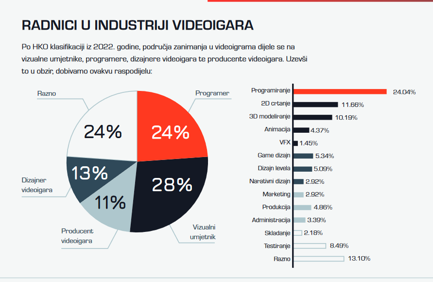

Jedna od kompanija koja u Srbiji razvija originalne proizvode u sferi informacionih tehnologija je Vebelinks, koja proizvodi igre i aplikacije za pametne telefone. Osnovana je u Nišu pre 12 godina, a njeni proizvodi od ideje do isporuke stvaraju se u Srbiji. „Pre svega, izbegavamo zavisnost od malog broja ili jednog velikog klijenta – umesto toga imamo milione krajnjih korisnika, sa kojima direktno radimo“, kaže Ivan Dimitrijević, šef marketinga niške firme, za BBC na srpskom. Ta činjenica može da predstavlja i izazov. „Pravimo proizvode ovde u Srbiji za tržište i igrače koji su jako daleko i fizički i kulturološki, pa je potrebno učiniti mnogo da se te distance razumeju i savladaju“, dodaje Dimitrijević. Za sedam godina rada u sektoru informacionih tehnologija u Srbiji, 34-godišnji Darko Pavlović prošao je kroz pet različitih kompanija.Tri su razvijale originalne proizvode, dok preostale dve posluju po modelu autsorsinga, odnosno njihovi zaposleni obavljaju projekte ili zadatke za druge firme koje ih unajmljuju. U firmama sa originalnim proizvodom je „pritisak manji, a rokovi dosta fleksibilniji“, dok radnici u autsors kompanijama potpuno određuju radno vreme i ukupnu dužinu rada na projektu prema potrebama klijenata, objašnjava on. „Kada radiš u firmi sa sopstvenim proizvodom, uglavnom uvek je isti projekat, specijalizuješ se za jednu stvar i u njoj ćeš postati dobar, a u autsorsingu stalno imaš nove projekte, učiš nove stvari i upoznaješ druge ljude.“ „Danas zaposleni biraju poslodavce, nekada je bilo obrnuto“: Ko najlakše pronalazi posao u Srbiji. Kriza u IT sektoru: Ko je pogođen u Srbiji, za koga nema brige i gde je izlaz „Mi nismo bogovi, mi smo programeri” Autsorsing kompanije su one koje „iznajmljuju“ zaposlene drugim firmama kako bi razvijali softverska rešenja za klijente, pa takva preduzeća nisu vlasnici proizvoda i kodova koje njihovi radnici izrađuju za klijente, objašnjava Mihailo Paunović, stručnjak za ekonomiku inovacija, za BBC na srpskom. „One zarađuju na razlici u ceni koju plaćaju zaposlenima i ceni koju naplate za iznajmljivanje radnika drugim firmama. „Proizvodne kompanije su inovativne, njihovi vlasnici su našli tržišnu nišu, spoznali da mogu da reše neki problem i razvili proizvod koji to omogućava“, priča naučni saradnik Instituta ekonomskih nauka (IEN). Prema podacima Agencije za privredne registre (APR), u Srbiji ima 5.811 aktivnih kompanija koje posluju u oblasti informacionih tehnologija. APR, kao ni Republički zavod za statistiku (RZS) i kabinet premijerke Srbije Ane Brnabić, sa kojim je BBC na srpskom takođe kontaktirao, ne raspolažu zvaničnim podacima o broju kompanija sa originalnim proizvodima i onih koje posluju po modelu autsorsinga. Iako nema zvaničnih podataka o udelima ova dva modela u srpskom IT sektoru, u njemu „definitivno posluje više autsorsing kompanija nego onih sa proizvodom“, dodaje Paunović. „Osnivači firmi sa proizvodom moraju da budu kreativni, da imaju originalne ideje i snose veći rizik od neuspeha, što je mnogo teže nego iznajmljivanje ljudi drugima za rešavanje njihovih konkretnih problema“, pojašnjava on. ‘Iznajmljivanje’ radne snage i gotov proizvod. Jedna od kompanija koja u Srbiji razvija originalne proizvode u sferi informacionih tehnologija je Vebelinks, koja proizvodi igre i aplikacije za pametne telefone. Pametni staklenik: Srpski inženjeri pronašli način da se povrće gaji iz fotelje Programeri najtraženija struka u Srbiji. Srpska IT firma postala deo jedne od najvećih gejming kompanija na svetu
| Kriterijum | Srbija | Estonija |
|---|---|---|
| Broj stavnika | 7 miliona | 1,3 miliona |
| Broj IT kompanija | 5.811 (aktivne kompanije) | Više od 1.500 startapa |
| Modeli poslovanja | Više autsorsing firmi nego proizvodnih kompanija | Fokus na startapovima sa originalnim proizvodima |
| Zapošljavanje u IT sektoru | Podaci o broju zaposlenih nisu dostupni | 5% radne snage zaposleno u IT sektoru (oko 30.000 ljudi) |
| Obrazovanje kadrova | Nema specifičnih podataka o broju diplomaca iz IT oblasti | Preko 1.000 stručnjaka za kompjuterske nauke godišnje |
| Primer uspešne kompanije | Nordeus (gejming industrija), Vebelinks (igre i aplikacije za pametne telefone) | Skajp (video komunikacija), Bolt (transport i logistika) |
One koji se odluče za samostalni put sopstvenog proizvoda čeka veći rizik na tržištu, ali i nagrada može da bude daleko izdašnija. „Mnogo je teže voditi proizvodnu firmu jer je lakše naći projekat i uraditi ga, nego da pronađete korisnike za vaš proizvod ili platformu, kao i da dođete do investitora, pogotovo kada ste na početku. „Nagrada i eventualna zarada sa sopstvenim proizvodom je veća, ali je početak daleko teži i mnogo je manja šansa da uspete u tom modelu nego u autsorsingu“, smatra Zrnić. Za kompanije u autsorsingu, najveći deo posla je gotov kada pronađu klijente i za njega urade projekat, dok je za produktne firme to „tek pola posla“, kaže Ivan Dimitrijević iz firme Vebelinks. Ekonomista Mihailo Paunović objašnjava da poslovanje u autsorsingu neretko pruža veću sigurnost preduzetnicima iz Srbije, dok rad na originalnom proizvodu ume da bude rezervni plan, makar u početku. „Najčešće se dešava da ljudi u IT sektoru stiču iskustvo radeći za druge, zarađuju i istovremeno razmišljaju o sopstvenom proizvodu – imaju izvor prihoda, a sami ili sa kolegama mogu paralelno da razvijaju proizvod“, pojašnjava. Mnogi stručnjaci iz Srbije su prošli baš tim putem. „To su baš one priče kod kojih je posao kretao ‘iz garaže’, a dobar primer za to je i Nordeus, jedna od najuspešnijih srpskih kompanija“, navodi Marko Vučetić iz platforme Hello World. Od četa sa lekarima, do „zdravstvenog Bukinga“: Kako je telemedicina stigla na Balkan. Ljudi prelaze na veštačku inteligenciju da bi naučili jezike od Vukove azbuke do Majkrobit uređaja
Iako ima samo 1,3 miliona stanovnika i ne spada u vodeće ekonomske sile Evrope, Estonija, baltička zemlja i bivša sovjetska republika, izgradila je jedan od najuspešnijih IT sektora na ovom kontinentu. Vlada ove zemlje usvojila je 2021. godine Digitalnu agendu 2030, koja predviđa državna ulaganja od 1,2 milijarde evra tokom ove decenije i ima za cilj školovanje novih kadrova u IT industriji, dodatno usavršavanje postojećih, ulaganje u istraživanje i razvoj u polju tehnologije i stoodstotnu prisutnost odraslih na internetu do 2030. Javni sektor je potpuno digitalizovan, pa se birokratske i poreske obaveze, kao i poslovne transakcije, obavljaju uglavnom putem interneta. Oko pet odsto radne snage u Estoniji zaposleno je u IT sektoru, koji učestvuje u stvaranju ukupnog bruto domaćeg proizvoda (BDP) sa sedam odsto, pokazuju zvanični podaci. Sa fakulteta u toj zemlji godišnje izađe više od 1.000 stručnjaka za kompjuterske nauke, a u IT sektoru ih je zaposleno oko 30.000, navodi se u vladinom izveštaju. U toj zemlji posluje više od 1.500 startapa, novoformiranih kompanija sa sopstvenim proizvodom, a godišnja ulaganja u te firme prevazišla su milijardu dolara 2022. godine, pokazuju podaci sajta Startap Estonija. Neke od najuspešnijih su Skajp, aplikacija za video komunikaciju na internetu, i Bolt, aplikacija za transport i logistiku, koje se koriste širom sveta. Te dve kompanije među 10 estonskih jednoroga, kako se nazivaju privatne kompanije koje dostignu vrednost veću od milijarde dolara, a ovaj izraz se u IT industriji najčešće upotrebljava za firme sa inovativnim proizvodima koji dovode do promena na tehnološkom tržištu. Veliki značaj za ovaj privredni sektor imaju kompanije koje putem autsorsinga rade za tehnološke firme iz 130 zemalja sveta, među kojima su Amerika, Kanada, Velika Britanija, Nemačka, Francuska, Švajcarska, Australija i druge, navodi se na internet sajtu Mobiluniti. Prema predviđanjima Statiste, nemačke kompanije za prikupljanje i tumačenje ekonomskih podataka, tokom 2023. godine investicije stranih kompanija u autsorsing firme u Estoniji premašiće 83 miliona dolara ove godine, a do 2028. biće gotovo udvostručene i dostići će 148,9 miliona dolara.
Dok u celokupnom IT sektoru nema zvaničnih podataka o raspodeli tržišta između autsorsinga i proizvodno orijentisanih preduzetnika, u srpskoj industriji video igara, koja je deo ovog sektora, podaci se beleže već pet godina. Srpska gejming asocijacija (SGA) u godišnjem izveštaju ove godine objavila je da 60 odsto njenih članova stvara igre i druge proizvode, koji su „od nule osmišljeni i proizvedeni u Srbiji“, kaže Kristina Janković, izvršna menadžerka asocijacije, za BBC na srpskom. „Preostalih 40 odsto se dele na one koje pružaju usluge i one koje su autsorsing firme, a samo osam odsto naših članova je u čistom autsorsingu – oni prave muziku, animacije ili trejlere za strane igre“, ističe.Postoje i slučajevi da domaći proizvođači igara deo posla poveravaju drugim preduzećima, ali i tada se sve sprovodi na domaćem terenu, ukazuje izvršna menadžerka SGA.
Globalna kriza u sektoru informacionih tehnologija početkom ove godine prelila se i na Srbiju, a domaće kompanije nisu se jednako uspešno snašle u tom periodu. Na autsorsing kompanije ona „malo više utiče“, jer inostrani partneri mogu da odluče da deo posla, koji su prethodno delegirali njima, sada obavljaju sami, napominje Marko Vučetić. „U težim trenucima poput ovog, bolje se snalaze produkt kompanije, jer imaju proizvod od kojeg kontinuirano zarađuju. „Kada dođe do krize, prirodno je da imaju možda manji priliv novca od proizvoda, ali ipak postoji konstantan dohodak i imaju više vremena da unapređuju proizvod, pa kada se tržište stabilizuje, dobijaju priliku da ga prilagode tržištu i od njega još zarade“, opisuje ovaj stručnjak. Ivan Dimitrijević iz kompanije Vebelinks kaže da tokom kriznih trenutaka u produktnim firmama, poput njegove, stvaranje, plasiranje i uspeh proizvoda „zavisi od vas samih“, daleko više nego što je to slučaj u autsorsingu. „Kada vlada opšta kriza, to se odslikava na celu privredu i građane, tako da i autsors i produkt kompanije bivaju pogođene, ali ste u poziciji da se bolje prilagodite kada pravite svoj proizvod. „On je namenjen brojnim klijentima na raznovrsnim lokacijama, pa ste time manje zavisni od uspeha jednog većeg individualnog klijenta ili nekoliko manjih, a dalji razvoj vaših proizvoda je u vašim rukama“, opisuje on.
Ni posle 16 godina rada sa stranim klijentima, a četiri manje u svojstvu vlasnika firme sa tim modelom, Bojan Zrnić ne planira da odustane. Smatra i da izraz autsorsingviše nije prikladan za srpsko tržište, jer on predstavlja premeštanje projekata u zemlje gde je radna snaga značajno jeftinija, što je u Srbiji sve manje slučaj. „Ovo sada je pre sorsing, jer strane kompanije dodeljuju projekte nama u Srbiji zato što ne mogu da nađu dovoljno stručnjaka kod kuće, a ne zbog cene radne snage“, objašnjava on. Ipak, sa kolegama priprema i originalni projekat, pa će ta novosadska kompanija uskoro imati iskustva i u proizvodno orijentisanom poslovanju. Taj put naziva „dobitnom i najsigurnijom kombinacijom“. „Čak i ako proizvod ne uspe, imate rezervnu varijantu sa kojom možete da nastavite da radite. „To ne mora da znači da će ta strategija biti najuspešnija, ali vam daje priliku da iskoristite prednosti, a sakrijete mane oba modela“, kaže Zarić. Dok ocenjuje da bi bilo „idealno“ da u Srbiji sve IT kompanije imaju originalne proizvode finansirane domaćim investicijama, ističe da to nije realno. „Ni Amerika nema samo proizvodnu scenu, već veći deo čine uslužne kompanije – to nije tipičan autsorsing, ali one rade uslužni softver za veće firme“, priča 41-godišnji inženjer. I Marko Vučetić, stručnjak iz platforme Hello World, zalaže se za „ravnotežu“ između dva modela. „Trenutno je najbitnije da se uveća broj startapa, kojih je oko 500 u ovom trenutku i potreban nam je dvostruko veći broj njih. „Trebalo bi da gradimo kompanije sa sopstvenim proizvodom, jer je ova kriza pokazala da smo tako stabilniji i sigurniji, ali je autsorsing jako važan deo industrije i tako će ostati“, smatra Vučetić. Ali, za veću orijentaciju ka originalnim proizvodima Srbiji nisu potrebne samo investicije i programeri, ukazuje Zarić. „Ono što fali našem IT sektoru su ljudi u marketingu i prodaji koji bi taj proizvod znali da plasiraju i naplate, što je često i mnogo bitnije od samog proizvoda. „Možemo da napravimo najbolji bicikl, ali ako ne umemo da ga prodamo, on će ostati u našem magacinu“, zaključuje ovaj stručnjak.
Robotika je spoj nauke, inženjerstva i tehnologije koja proizvodi mašine i robote koje zamjenjuju, nadopunjuju ili repliciraju ljudske radnje. To je profesija koja kreira nova radna mjesta. Mnogi od nas su se sa robotima prvi put „susreli“ gledajući filmove ili čitajući SF priče. Te mašine kao plod mašte su služile da pomažu ljudima u raznim poslovima. Poznati su R2-D2 koji je pamtio razne planove i imao mogućnost otvaranja raznih vrata i humanoid C-3PO sa znanjem jezika koji su pomagali glavnim junacima tokom avantura u epizodama Star Wars-a. Robotika kao nauka je prošla taj prvi više maštoviti period i sad je u fazi sve ozbiljnijeg i sistematskog razvoja robota koji pomažu ljudima u proizvodnji, transportu, „prljavim“ i zahtjevnim poslovima, uslugama u zdravstvu pa se do edukacije i kućnih poslova. Te funkcije i opravdavaju sam nastanak riječi „robot“. Izraz dolazi od češke riječi robota, u slobodnom prijevodu kao “prisilni rad”. Robotika je zastupljena i u Bosni i Hercegovini, gdje pojedine firme koriste automatizaciju kako bi unaprijedili poslovanje. Po definiciji, robotika je spoj nauke, inženjerstva i tehnologije koja proizvodi mašine, robote koje zamjenjuju (ili repliciraju) ljudske radnje.
Robota ima raznih oblike i veličina. Ovisno od namjene i zadataka eksperimentiše se sa 0,2 milimetra „RoboBee“ za promatranje vremenskih nepogoda, do 100-metarskog robotskog broda „Of Course I Still Love You“, koji autonomno „hvata“ prvi stepen SpaceX rakete u povratku na Zemlju.
Unaprijed programirani roboti djeluju u kontroliranom okruženju gdje obavljaju jednostavne, monotone zadatke. Primjer unaprijed programiranog robota bila bi mehanička ruka na automobilskoj montažnoj liniji koja zavaruje vrata ili podešava određeni dio u motoru.
Humanoidni roboti izgledaju i / ili oponašaju ljudsko ponašanje. Ovi roboti obično izvode ljudske aktivnosti (poput trčanja, skakanja i nošenja predmeta), a ponekad su dizajnirani i da izgledaju poput nas, čak i da imaju ljudska lica i izraze.
Autonomni roboti djeluju nezavisno od ljudskih operatora. Ovi su roboti obično dizajnirani da izvršavaju zadatke u otvorenom okruženju za koje nije potreban ljudski nadzor. Primjer autonomnog robota mogao bi biti usisavač Roomba, koji koristi senzore za slobodno kretanje po kući ili već spomenuti dron brod koji dočekuje raketu.
Teleoperativni roboti su mehanički roboti kojima upravlja čovjek. Ovi roboti obično rade u ekstremnim geografskim uslovima, vremenskim prilikama, itd. Primjeri teleoperacijskih robota su podmornice pod kontrolom ljudi koje se koriste za popravljanje propuštanja podvodnih cijevi tijekom izlijevanja nafte ili dronova koji se koriste za otkrivanje mina na bojnom polju ili preživjelih u nesrećama.
Roboti za poboljšavanje trenutne ljudske mogućnosti ili zamjenjuju mogućnosti koje je čovjek možda izgubio. Neki primjeri ovih robota su robotski protetski udovi ili egzoskeleti koji se koriste za podizanje velikih težina. Svaki od navedenih robota se sastoji od pokretne fizičku strukture, nekog tipa motora, sistema senzora, energetskog napajanja i naravno kompjuterskog “mozga” koji upravlja svim tim elementima. Fascinacija radom robota i njihova efikasnost se najbolje ogleda u skladištima najveće online prodavnice Amazon. U SAD su omogućene besplatne posjete Amazonovim centrima za popunjavanje robe (Amazon Fulfillment Center Tours). U tim centrima roboti igraju veliku ulogu u distribuciji narudžbi. Velike palete se pomjeraju po skladištu same i mada izgleda dosta haotično, kretanje je svrsishodno jer je uvezano za kompletnim sistemom prodaje. Tako recimo, ako neki proizvod postane trenutno popularan i tražen, roboti sa paletama koje sadrže te proizvode će biti bliže centru za utovar kako bi se brže sprovela narudžba.
Sve sofisticiraniji roboti mogu postati sve brojniji u našem svijetu, ali da bi roboti bili zaista korisni, morat će postati samostalniji. Naime, nemoguće je programirati industrijskog ili kućnog robota sa uputama za hvatanje svakog alata ili predmeta sa kojim se ikada može susresti. Ako želimo da to nauče sami tu dolazi do primjene umjetne inteligencije. U budućnosti se očekuje najveći napredak upravo u tom kvalitetnom miksu uslužnosti robota i sposobnosti samostalnog učenja uz primjenu mašinskog učenja i umjetne inteligencije.